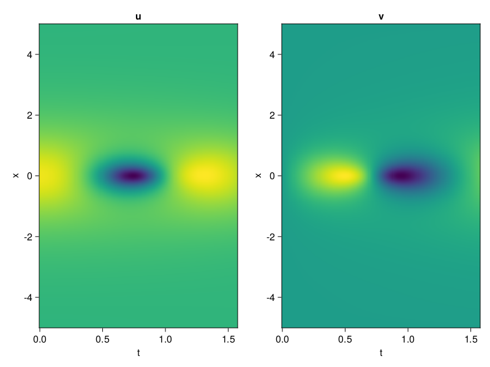
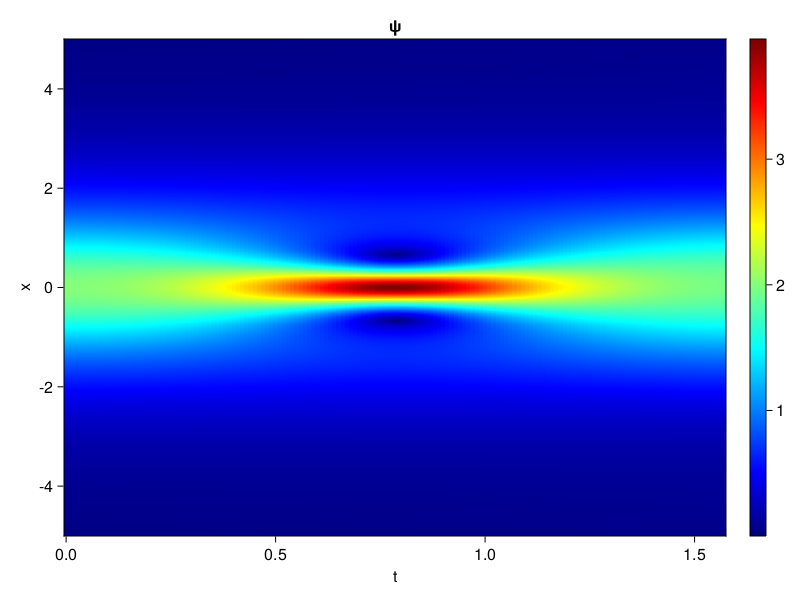
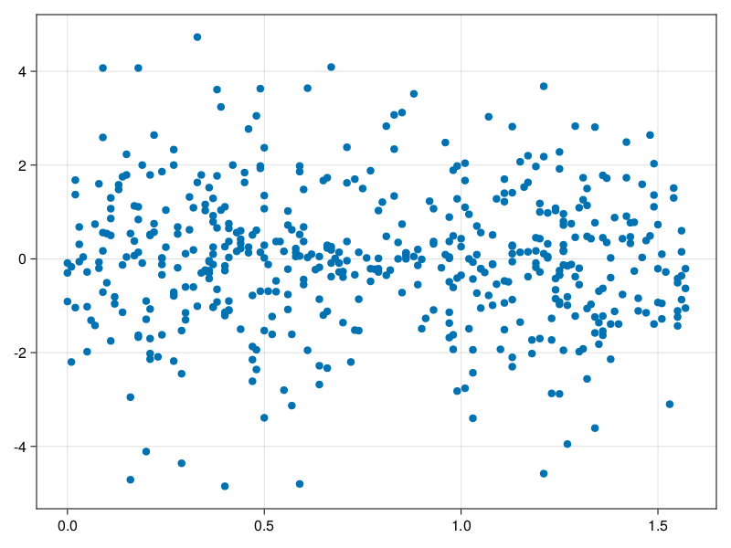

Schrödinger equation
The nonlinear Shrödinger equation is given by
\[\mathrm{i} \partial_t \psi=-\frac{1}{2} \sigma \partial_{x x} \psi-\beta|\psi|^2 \psi\]
Let $\sigma=\beta=1, \psi=u+v i$, the equation can be transformed into a system of partial differential equations
using ModelingToolkit, IntervalSets, Sophon, CairoMakie
using Optimization, OptimizationOptimJL
@parameters x,t
@variables u(..), v(..)
Dₜ = Differential(t)
Dₓ² = Differential(x)^2
eqs=[Dₜ(u(x,t)) ~ -Dₓ²(v(x,t))/2 - (abs2(v(x,t)) + abs2(u(x,t))) * v(x,t),
Dₜ(v(x,t)) ~ Dₓ²(u(x,t))/2 + (abs2(v(x,t)) + abs2(u(x,t))) * u(x,t)]
bcs = [u(x, 0.0) ~ 2sech(x),
v(x, 0.0) ~ 0.0,
u(-5.0, t) ~ u(5.0, t),
v(-5.0, t) ~ v(5.0, t)]
domains = [x ∈ Interval(-5.0, 5.0),
t ∈ Interval(0.0, π/2)]
@named pde_system = PDESystem(eqs, bcs, domains, [x,t], [u(x,t),v(x,t)])\[ \begin{align} \frac{\mathrm{d}}{\mathrm{d}t} u\left( x, t \right) =& - \frac{1}{2} \frac{\mathrm{d}}{\mathrm{d}x} \frac{\mathrm{d}}{\mathrm{d}x} v\left( x, t \right) - \left( \left|u\left( x, t \right)\right|^{2} + \left|v\left( x, t \right)\right|^{2} \right) v\left( x, t \right) \\ \frac{\mathrm{d}}{\mathrm{d}t} v\left( x, t \right) =& \frac{1}{2} \frac{\mathrm{d}}{\mathrm{d}x} \frac{\mathrm{d}}{\mathrm{d}x} u\left( x, t \right) + \left( \left|u\left( x, t \right)\right|^{2} + \left|v\left( x, t \right)\right|^{2} \right) u\left( x, t \right) \end{align} \]
pinn = PINN(u = Siren(2,1; hidden_dims=16,num_layers=4, omega = 1.0),
v = Siren(2,1; hidden_dims=16,num_layers=4, omega = 1.0))
sampler = QuasiRandomSampler(500, (200,200,20,20))
strategy = NonAdaptiveTraining(1,(10,10,1,1))
prob = Sophon.discretize(pde_system, pinn, sampler, strategy)OptimizationProblem. In-place: true
u0: ComponentVector{Float64}(u = (layer_1 = (weight = [-0.05571281909942627 0.18382853269577026; 0.2864561080932617 0.01650559902191162; … ; 0.42908138036727905 0.16367322206497192; -0.14655792713165283 0.0015253424644470215], bias = [0.0; 0.0; … ; 0.0; 0.0;;]), layer_2 = (weight = [0.4405805766582489 0.5623168349266052 … 0.5138476490974426 0.39706164598464966; -0.5728303790092468 -0.42224887013435364 … -0.3584255576133728 0.5541490316390991; … ; 0.10793193429708481 0.21532359719276428 … -0.2078292965888977 -0.6070714592933655; 0.045805756002664566 0.5293388366699219 … -0.4983043968677521 0.0940425768494606], bias = [0.0; 0.0; … ; 0.0; 0.0;;]), layer_3 = (weight = [-0.6079273223876953 -0.4550984799861908 … 0.3467807471752167 0.1205536499619484; 0.258734792470932 0.6042714715003967 … -0.09704048186540604 0.20068751275539398; … ; 0.28658097982406616 0.5156232118606567 … 0.37099090218544006 0.3072231113910675; 0.21246935427188873 -0.29782983660697937 … 0.06286144256591797 0.03406194970011711], bias = [0.0; 0.0; … ; 0.0; 0.0;;]), layer_4 = (weight = [-0.33838751912117004 -0.07662706822156906 … 0.3978806436061859 -0.534373939037323; -0.5538308620452881 0.04885666444897652 … 0.5249003767967224 0.3516799509525299; … ; -0.04705836996436119 -0.37686029076576233 … -0.5052722096443176 -0.421855092048645; 0.19624477624893188 -0.22457195818424225 … 0.13222825527191162 0.1543733775615692], bias = [0.0; 0.0; … ; 0.0; 0.0;;]), layer_5 = (weight = [-0.16358830034732819 -0.21945878863334656 … -0.2630697786808014 0.06251177191734314], bias = [0.0;;])), v = (layer_1 = (weight = [-0.40589696168899536 0.02900749444961548; -0.32177072763442993 0.06189948320388794; … ; -0.20372283458709717 -0.3096919655799866; -0.23852211236953735 0.01817142963409424], bias = [0.0; 0.0; … ; 0.0; 0.0;;]), layer_2 = (weight = [-0.5245280265808105 0.29565924406051636 … -0.4344998002052307 -0.017773864790797234; -0.09015610069036484 -0.16037335991859436 … -0.00866384245455265 0.3667682707309723; … ; 0.1354542076587677 0.13403815031051636 … -0.23359306156635284 -0.12586261332035065; 0.285679429769516 0.08510395884513855 … -0.5593296885490417 0.3678450286388397], bias = [0.0; 0.0; … ; 0.0; 0.0;;]), layer_3 = (weight = [-0.19999852776527405 -0.07633134722709656 … -0.350926011800766 0.041135989129543304; -0.14157412946224213 -0.5835524797439575 … -0.2591460049152374 0.611029326915741; … ; 0.1549965888261795 -0.45402997732162476 … -0.3819456696510315 -0.23371022939682007; -0.4109283685684204 -0.3021344542503357 … -0.15317806601524353 -0.4207838773727417], bias = [0.0; 0.0; … ; 0.0; 0.0;;]), layer_4 = (weight = [-0.5763551592826843 0.5794196128845215 … 0.1980939507484436 0.1619635373353958; 0.5557041764259338 -0.019621944054961205 … 0.11189907789230347 -0.3617797791957855; … ; -0.10265407711267471 0.02096179500222206 … 0.2119625061750412 0.01952609419822693; 0.12071701884269714 -0.4567549526691437 … 0.17764118313789368 0.3956014811992645], bias = [0.0; 0.0; … ; 0.0; 0.0;;]), layer_5 = (weight = [-0.021267374977469444 -0.4296761453151703 … -0.22128503024578094 -0.4300061762332916], bias = [0.0;;])))Now we train the neural nets and resample data while training.
function train(pde_system, prob, sampler, strategy, resample_period = 500, n=10)
bfgs = BFGS()
res = Optimization.solve(prob, bfgs; maxiters=2000)
for i in 1:n
data = Sophon.sample(pde_system, sampler)
prob = remake(prob; u0=res.u, p=data)
res = Optimization.solve(prob, bfgs; maxiters=resample_period)
end
return res
end
res = train(pde_system, prob, sampler, strategy)u: ComponentVector{Float64}(u = (layer_1 = (weight = [-0.36248976539935246 0.5061001666386266; 0.42808679213849227 -0.006239944915047355; … ; 0.40668710474724024 0.3252534688639821; -0.5580277265117016 0.5658009867161554], bias = [-0.1580190040977608; 0.22049678076154466; … ; -0.3710891679725083; -0.32918297457845175;;]), layer_2 = (weight = [0.41118263659063436 0.2944688849048475 … 0.4310315246879288 0.3066461167859512; -0.6256167543041876 -0.40146491776627596 … -0.2969813399545587 0.5830512416102279; … ; 0.24356548143285353 0.2586687098789562 … -0.12081800194700544 -0.21472484837876357; 0.20522079757694753 0.4408212283320358 … -0.5255362383546861 0.25342610832636886], bias = [0.04209200244321526; -0.13809993705212928; … ; 0.14029157918419624; -0.12320064180292874;;]), layer_3 = (weight = [-0.3426782632531352 -0.5278403169859955 … 0.5700952169041293 0.3152824325410534; 0.3494370232621933 0.611408680932694 … 0.228027248595651 -0.13853609829329774; … ; 0.23650601298034732 0.621389067205821 … 0.3625077983938082 0.3560834789190285; 0.29931681427432205 -0.17474315822846423 … -0.008125633168623568 0.07932452690562716], bias = [-0.2902464085769129; 0.09182286217019857; … ; -0.1365058015257091; -0.16153275815710225;;]), layer_4 = (weight = [-0.30900954914384315 -0.3394985619706857 … 0.2658412383329299 -0.6078136497824088; -0.43846677653309185 -0.14029878547664748 … 0.5383677913221098 0.12941284729756675; … ; -0.2983793114708119 -0.19134134237510286 … -0.33064842693681484 -0.2884844118176477; 0.6077388102569145 -0.4618919900747267 … -0.26572878421376095 0.13929964753867402], bias = [0.05917018643149488; -0.25731758733998666; … ; 0.07891563029383963; -0.09732461024424018;;]), layer_5 = (weight = [-1.2433861867162732 -0.3024720205823734 … -0.324326138806807 0.46532159920925736], bias = [-0.2817884159489574;;])), v = (layer_1 = (weight = [-1.2965973229830072 -0.6170880838069095; -0.5985874711541493 0.5702731372236836; … ; -0.22533730387984777 -0.63267650278871; -0.3689484138492996 -0.30735074309909893], bias = [0.3590437082377111; -0.21025637050340776; … ; -0.09102177047969079; 0.12588381611876692;;]), layer_2 = (weight = [-0.32155159057106075 0.42262090831326793 … -0.32288925237526833 -0.16553353742388788; -0.05752976548469338 -0.1605515939226666 … -0.16519844400275482 0.1553666201136744; … ; -0.3149353091381513 0.33733345747942883 … -0.10241302810069317 -0.29082396212313605; 0.41345463617000033 -0.24017474264931826 … -0.2039519715744259 0.6580191258080922], bias = [0.037642660940243065; 0.24201763276991178; … ; -0.07727525918516175; -0.0560249797215118;;]), layer_3 = (weight = [-0.424865324737388 -0.48153605865000637 … -0.5387531236327088 -0.5017511261707708; -0.1657308174146007 -0.4202307569835293 … -0.34216510198249966 0.4633156888384578; … ; 0.3705894921822138 -0.4169312321592138 … -0.3995570337774217 -0.2688977508554913; 0.0164467582211527 -0.27467265454765555 … -0.21416151488123186 -0.36471781858529484], bias = [0.8326020687764566; -0.07960091996803348; … ; -0.17179833589017654; -0.11805658303742686;;]), layer_4 = (weight = [-0.38505597547957926 0.6790897355353778 … 0.19331370188057606 0.13915709144254623; 1.0002123556741713 0.03674836126457737 … 0.11791151216037885 0.027235226764142136; … ; -0.03457357078682493 0.025265951455492357 … 0.07282909691460113 -0.26214482958659274; 0.18055956610651633 -0.25724423385876793 … 0.20682603835759228 0.47927577372641245], bias = [0.03778920780445037; 0.25158805061365913; … ; -0.0949487942452237; -0.0381385678895058;;]), layer_5 = (weight = [0.693706552978501 -0.12796868602421835 … -0.16669410986345493 -0.6599946786271632], bias = [0.199988266418309;;])))phi = pinn.phi
ps = res.u
xs, ts= [infimum(d.domain):0.01:supremum(d.domain) for d in pde_system.domain]
u = [sum(phi.u(([x,t]), ps.u)) for x in xs, t in ts]
v = [sum(phi.v(([x,t]), ps.v)) for x in xs, t in ts]
ψ = @. sqrt(u^2+ v^2)
axis = (xlabel="t", ylabel="x", title="u")
fig, ax1, hm1 = heatmap(ts, xs, u', axis=axis)
ax2, hm2= heatmap(fig[1, end+1], ts, xs, v', axis= merge(axis, (; title="v")))
display(fig)
axis = (xlabel="t", ylabel="x", title="ψ")
fig, ax1, hm1 = heatmap(ts, xs, ψ', axis=axis, colormap=:jet)
Colorbar(fig[:, end+1], hm1)
display(fig)
Customize Sampling
Bascially any sampling method is supportted. For example we can sample data according to the predicted solution.
using StatsBase
data = vec([[x, t] for x in xs, t in ts])
wv = vec(ψ)
new_data = wsample(data, wv, 500)
new_data = reduce(hcat, new_data)
fig, ax = scatter(new_data[2,:], new_data[1,:])
prob.p[1] = new_data
prob.p[2] = new_data
prob = remake(prob; u0 = res.u)
# res = Optimization.solve(prob, bfgs; maxiters=1000)OptimizationProblem. In-place: true
u0: ComponentVector{Float64}(u = (layer_1 = (weight = [-0.36248976539935246 0.5061001666386266; 0.42808679213849227 -0.006239944915047355; … ; 0.40668710474724024 0.3252534688639821; -0.5580277265117016 0.5658009867161554], bias = [-0.1580190040977608; 0.22049678076154466; … ; -0.3710891679725083; -0.32918297457845175;;]), layer_2 = (weight = [0.41118263659063436 0.2944688849048475 … 0.4310315246879288 0.3066461167859512; -0.6256167543041876 -0.40146491776627596 … -0.2969813399545587 0.5830512416102279; … ; 0.24356548143285353 0.2586687098789562 … -0.12081800194700544 -0.21472484837876357; 0.20522079757694753 0.4408212283320358 … -0.5255362383546861 0.25342610832636886], bias = [0.04209200244321526; -0.13809993705212928; … ; 0.14029157918419624; -0.12320064180292874;;]), layer_3 = (weight = [-0.3426782632531352 -0.5278403169859955 … 0.5700952169041293 0.3152824325410534; 0.3494370232621933 0.611408680932694 … 0.228027248595651 -0.13853609829329774; … ; 0.23650601298034732 0.621389067205821 … 0.3625077983938082 0.3560834789190285; 0.29931681427432205 -0.17474315822846423 … -0.008125633168623568 0.07932452690562716], bias = [-0.2902464085769129; 0.09182286217019857; … ; -0.1365058015257091; -0.16153275815710225;;]), layer_4 = (weight = [-0.30900954914384315 -0.3394985619706857 … 0.2658412383329299 -0.6078136497824088; -0.43846677653309185 -0.14029878547664748 … 0.5383677913221098 0.12941284729756675; … ; -0.2983793114708119 -0.19134134237510286 … -0.33064842693681484 -0.2884844118176477; 0.6077388102569145 -0.4618919900747267 … -0.26572878421376095 0.13929964753867402], bias = [0.05917018643149488; -0.25731758733998666; … ; 0.07891563029383963; -0.09732461024424018;;]), layer_5 = (weight = [-1.2433861867162732 -0.3024720205823734 … -0.324326138806807 0.46532159920925736], bias = [-0.2817884159489574;;])), v = (layer_1 = (weight = [-1.2965973229830072 -0.6170880838069095; -0.5985874711541493 0.5702731372236836; … ; -0.22533730387984777 -0.63267650278871; -0.3689484138492996 -0.30735074309909893], bias = [0.3590437082377111; -0.21025637050340776; … ; -0.09102177047969079; 0.12588381611876692;;]), layer_2 = (weight = [-0.32155159057106075 0.42262090831326793 … -0.32288925237526833 -0.16553353742388788; -0.05752976548469338 -0.1605515939226666 … -0.16519844400275482 0.1553666201136744; … ; -0.3149353091381513 0.33733345747942883 … -0.10241302810069317 -0.29082396212313605; 0.41345463617000033 -0.24017474264931826 … -0.2039519715744259 0.6580191258080922], bias = [0.037642660940243065; 0.24201763276991178; … ; -0.07727525918516175; -0.0560249797215118;;]), layer_3 = (weight = [-0.424865324737388 -0.48153605865000637 … -0.5387531236327088 -0.5017511261707708; -0.1657308174146007 -0.4202307569835293 … -0.34216510198249966 0.4633156888384578; … ; 0.3705894921822138 -0.4169312321592138 … -0.3995570337774217 -0.2688977508554913; 0.0164467582211527 -0.27467265454765555 … -0.21416151488123186 -0.36471781858529484], bias = [0.8326020687764566; -0.07960091996803348; … ; -0.17179833589017654; -0.11805658303742686;;]), layer_4 = (weight = [-0.38505597547957926 0.6790897355353778 … 0.19331370188057606 0.13915709144254623; 1.0002123556741713 0.03674836126457737 … 0.11791151216037885 0.027235226764142136; … ; -0.03457357078682493 0.025265951455492357 … 0.07282909691460113 -0.26214482958659274; 0.18055956610651633 -0.25724423385876793 … 0.20682603835759228 0.47927577372641245], bias = [0.03778920780445037; 0.25158805061365913; … ; -0.0949487942452237; -0.0381385678895058;;]), layer_5 = (weight = [0.693706552978501 -0.12796868602421835 … -0.16669410986345493 -0.6599946786271632], bias = [0.199988266418309;;])))